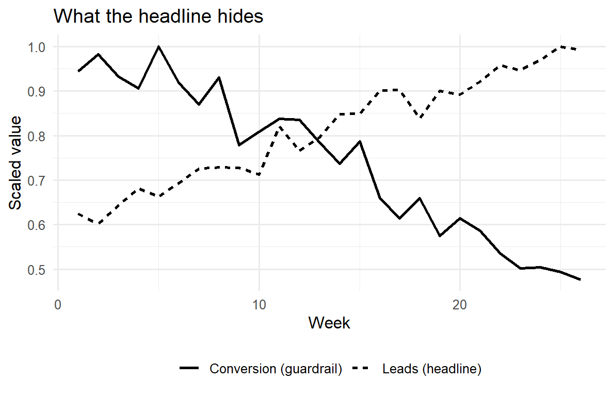

A research result that no one can read, reuse, or act on is not yet a result; it is private knowledge. Reporting is the discipline that converts an estimate, a test, or a model into an object that a reader can evaluate and a decision-maker can use. This chapter treats reporting as a first-class methodological problem rather than a clerical afterthought. The choices made here—which numbers reach a table, how an effect is drawn, what is held back, how the whole pipeline can be re-run—determine whether a finding survives scrutiny and whether it changes behavior. Two audiences read marketing research and they read it differently: a scholarly audience that wants identification, uncertainty, and the means to replicate, and a managerial audience that wants a decision, its expected payoff, and the risk of being wrong. A good report serves both without lying to either.
The chapter proceeds from substance to surface. It first fixes the object of communication—an estimate together with its uncertainty—and the principle that governs all honest reporting: show the reader enough to second-guess you. It then treats the two workhorses of static communication, tables and figures, formally enough to say when each is the right instrument and what makes one misleading. From there it builds the case for reproducible reporting, where the document and the computation are one artifact, and gives runnable machinery for it. It contrasts the academic and managerial registers, which differ not in honesty but in what they foreground. It closes with dashboards—live, interactive reporting—and the metric-governance problems they create, because a number shown continuously to a manager is a number that will be optimized, sometimes against the firm’s interest.
57.1 What Reporting Communicates
The atomic unit of a quantitative report is not a number but an estimate with its uncertainty. Let \(\theta\) be a population quantity of interest—an elasticity, a treatment effect, a market share, a lift. An estimator \(\hat\theta\) computed from data is a random variable; a single report of \(\hat\theta\) alone is therefore incomplete, because it suppresses the sampling distribution that tells the reader how seriously to take it. The minimal honest report is the triple
\[
\bigl(\hat\theta,\ \widehat{\operatorname{se}}(\hat\theta),\ \text{the model and data that produced them}\bigr),
\tag{57.1}\]
from which a reader can reconstruct confidence intervals, test statistics, and— crucially—decide whether the precision is adequate for their decision, which is rarely the author’s decision. Reporting only \(\hat\theta\) invites the reader to treat noise as signal; reporting only a \(p\)-value invites them to treat “significant” as “large,” a confusion the field has spent two decades trying to unlearn.1 The governing principle is sufficiency for second-guessing: a report should contain enough for a competent skeptic to redo the inference, vary the assumptions, and reach their own verdict.
This reframing has an immediate consequence for what belongs in a report. Three quantities travel together and should be reported together: a point estimate (the best single guess), a measure of dispersion (standard error, posterior standard deviation, or interval), and a specification (the estimator, the controls, the sample). A fourth—an economic translation of the estimate into units the audience cares about (dollars, share points, conversions) —is what separates a report that informs from one that merely records. The managerial value of marketing research rests on making that translation explicit and defensible (Hanssens and Pauwels 2016).
A statistical analysis, properly conducted, is a delicate dissection of uncertainties, a surgery of suppositions. The motto of the statistician should be de omnibus dubitandum—everything is to be doubted. Reporting is where that doubt is made visible to the reader rather than hidden from them.
— after the spirit of the exploratory-data-analysis tradition
57.1.1 The Two-Audience Problem, Formalized
Reporting is a communication channel, and like any channel it has a sender, a message, and a receiver who decodes under noise (Chapter 18 develops the marketing–finance translation; the information-theoretic framing recurs in the diffusion and word-of-mouth literatures). The sender (the researcher) holds a posterior over \(\theta\); the receiver (reader) holds a prior and a loss function that prices the consequences of acting on a wrong belief. The two canonical receivers price errors differently:
The scholarly receiver is loss-averse over false claims. The cost of asserting an effect that is not there (a Type I error that enters the literature) is high and durable, because others will build on it. This receiver wants conservative inference, full disclosure of researcher degrees of freedom, and replicability—precisely so the channel does not transmit noise as if it were signal.
The managerial receiver is loss-averse over bad decisions. The cost is the expected regret of choosing the wrong action under the estimate, integrated over the estimate’s uncertainty. This receiver may rationally act on a noisy estimate if the downside of inaction is worse, and wants the estimate translated into the decision’s own currency.
These are different loss functions, not different standards of honesty. The same \((\hat\theta, \widehat{\operatorname{se}})\) feeds both; what changes is what is foregrounded and what is relegated to an appendix. A report that confuses the two—burying the decision under robustness tables for a manager, or suppressing identification concerns to impress a manager—fails the audience it was written for. The sophistication of marketing research has risen precisely as the field learned to hold rigor and relevance simultaneously rather than trading one for the other (Lehmann, McAlister, and Staelin 2011).
57.2 Tables and Figures
Tables and figures are the two static encodings of quantitative results, and they are not interchangeable. The operative distinction is between lookup and comparison. A table is a lookup structure: it preserves exact values and lets a reader retrieve a specific number (“what was the coefficient on price?”). A figure is a comparison structure: it maps numbers to position, length, or color so the reader’s visual system can perceive relations—trends, gaps, interactions— that a table forces them to compute by hand. The design rule follows directly: use a table when the reader needs values; use a figure when the reader needs to see a pattern.
57.2.1 When a Table
A table is the right instrument when (i) exact magnitudes matter and will be quoted or recomputed, (ii) the entries are heterogeneous in kind (estimates, standard errors, fit statistics, sample sizes) and cannot share a single visual scale, or (iii) the number of items is small enough that the eye can scan them. Regression results are the paradigm case: a reader needs the coefficient, its standard error, and the model’s fit, to four meaningful digits, in a form they can transcribe. The canonical estimation table reports, for each specification, the coefficient vector \(\hat{\boldsymbol\beta}\), dispersion beneath each estimate, and goodness-of-fit at the foot, with specifications across columns so the reader can trace how an estimate moves as controls are added—the single most informative robustness display, because a coefficient that swings when a plausible control enters is a coefficient that is not identified.
A table also imposes obligations. Precision should be meaningful, not maximal: reporting eight digits of a quantity estimated to two is a form of false confidence, and rounding to the precision the data support is itself an honesty requirement. Units, sample size, and the estimation window belong in the caption or notes, not in the reader’s memory. And tables in a published artifact must be generated by code, never typed, because a hand-transcribed table is a table with an unverifiable error rate.
The example below fits two nested specifications and renders a publication-style comparison table directly from the model objects, so the printed numbers are, by construction, the numbers the model produced.
Code
library(dplyr)library(broom)library(knitr)library(kableExtra)set.seed(43)# Simulated brand-choice-style data: price, a loyalty cue, and a promotion flag.n<-600promo<-rbinom(n, 1, 0.4)loyalty<-rnorm(n)price<-3+0.5*promo+rnorm(n, sd =0.4)# promos lower observed price below# True data-generating process for log-sales:log_sales<-6-1.2*price+0.8*loyalty+0.5*promo+rnorm(n, sd =0.5)dat<-data.frame(log_sales, price, loyalty, promo =factor(promo))m1<-lm(log_sales~price, data =dat)m2<-lm(log_sales~price+loyalty+promo, data =dat)
Code
fmt<-function(model, label){tidy(model)|>transmute(term,!!label:=sprintf("%.3f<br><span style='font-size:80%%'>(%.3f)</span>",estimate, std.error))}tab<-full_join(fmt(m1, "Sparse"), fmt(m2, "Full"), by ="term")gof<-tibble(term ="Adj. R-squared", Sparse =sprintf("%.3f", summary(m1)$adj.r.squared), Full =sprintf("%.3f", summary(m2)$adj.r.squared))bind_rows(tab, gof)|>kable(escape =FALSE, align ="lrr", caption ="Log-sales regressions. Standard errors in parentheses. Adding the loyalty cue and promotion control shifts the price coefficient, the first thing a careful reader checks.")|>kable_styling(full_width =FALSE)
Log-sales regressions. Standard errors in parentheses. Adding the loyalty cue and promotion control shifts the price coefficient, the first thing a careful reader checks.
Notice what the two-column layout buys: the price coefficient is visible before and after controls enter, and its stability (or movement) is the report’s most honest robustness signal—far more informative than any single starred number.
57.2.2 When a Figure
A figure is the right instrument when the message is a relationship: a trend over time, a dose–response curve, an interaction, a distribution, an uncertainty band. The reason is perceptual. Position along a common scale is the visual encoding humans judge most accurately; length and angle are next; area, color saturation, and hue are progressively less accurate.2 A figure that encodes its key comparison as position on a shared axis lets the reader perceive the result; one that encodes it as color or area forces them to estimate, badly. The design corollary is that the variable carrying the result should be encoded by position, and decoration that competes for that channel should be removed.
Three failure modes recur and each has a name and a fix. A truncated axis— starting a bar chart’s value axis above zero—exaggerates differences by mapping a small ratio onto a large length; bars must baseline at zero because their meaning is length. Overplotting—thousands of points collapsing into an ink blob—hides the distribution it purports to show; the fix is transparency, binning, or a density encoding. Uncertainty erasure—drawing a point estimate as a clean line with no band—is the graphical analogue of reporting \(\hat\theta\) without \(\widehat{\operatorname{se}}(\hat\theta)\), and is arguably the most common dishonesty in applied figures, because a clean line feels certain. The honest default is to draw the interval, not just the estimate.
The figure below makes the last point operational. It plots the model-implied relationship between price and log-sales together with a 95% confidence band, so the reader sees both the estimated slope and how well-pinned it is.
Figure 57.1: Model-implied price response with a 95% confidence band. The band, not the line, is the honest object: it shows the reader how precisely the slope is identified.
57.2.3 Choosing Between Them
The choice is not stylistic but functional, and it can be stated as a short decision rule. The table below contrasts the two instruments on the dimensions that actually decide the call.
Table 57.1: Tables versus figures: the choice follows from what the reader must do with the result.
Dimension
Table
Figure
Reader's task
Look up a value
See a relationship
Encodes
Symbols (digits)
Position, length, color
Best when
Few heterogeneous numbers
Many values or a trend
Exact values
Preserved
Approximate
Patterns/interactions
Reader must compute
Perceived directly
Failure mode
False precision; hand-typed errors
Truncated axis; hidden uncertainty
A useful heuristic: if you find yourself asking the reader to compare across rows or columns of a table, the comparison wants to be a figure; if you find yourself annotating a figure with exact numbers the reader will quote, those numbers want to be a table. Many reports need both—a figure for the pattern, a table in the appendix for the values—and that redundancy is a feature, because it serves the two audiences at once.
57.3 Reproducible Reporting
The deepest reporting failure is not a bad table or a misleading axis; it is a result no one can regenerate, including its author six months later. Reproducible reporting is the practice of binding the narrative (prose, tables, figures) to the computation (data, code, environment) in a single executable artifact, so that the reported numbers are produced by running the document rather than pasted into it. Formally, let a report be a function
\[
R = f(D, C, E),
\tag{57.2}\]
where \(D\) is the data, \(C\) the analysis code, \(E\) the computational environment (language and package versions, seeds), and \(f\) the build process. A report is reproducible when re-evaluating \(f\) on the same \((D, C, E)\) returns a byte-identical \(R\), and robust when small, defensible perturbations to \(C\) or \(E\) leave the substantive conclusions intact. The two are distinct: reproducibility is about the pipeline, robustness about the science. A result can be perfectly reproducible and entirely fragile.
This framing dissolves a category of error that copy-and-paste workflows make nearly inevitable: the transcription gap, where the number in the manuscript no longer matches the number the code produces because the data updated, the model changed, or a digit was mistyped. In a literate-programming workflow—the model this book is written in, where prose and {r}/{python} chunks live in one .qmd file and the build executes the code to insert results—the transcription gap cannot open, because there is no transcription. Marketing’s move into data-rich, code-intensive analysis makes this non-negotiable: when the analysis is a pipeline of joins, models, and simulations, the only credible report is one the pipeline emits (Wedel and Kannan 2016).
Figure 57.2 lays out the dependency structure such a pipeline must make explicit and re-runnable.
flowchart LR
A["Raw data<br/>(immutable)"] --> B["Cleaning / joins<br/>(scripted)"]
B --> C["Analysis dataset<br/>(versioned)"]
C --> D["Models & estimates<br/>(seeded)"]
D --> E["Tables & figures<br/>(code-generated)"]
E --> F["Rendered report<br/>(prose + results)"]
G["Environment<br/>(versions, seeds)"] -.-> B
G -.-> D
style A fill:#e8e8e8,stroke:#333
style F fill:#d8efd8,stroke:#333
Figure 57.2: A reproducible reporting pipeline. Each artifact depends only on declared inputs; re-running from raw data regenerates every downstream table and figure, closing the transcription gap.
57.3.1 The Pillars of Reproducibility
Four practices make Equation 57.2 hold in practice, and each closes a specific leak.
Determinism. Every stochastic step is seeded (set.seed() in R, an explicit RNG seed elsewhere), so that simulations, bootstraps, cross-validation splits, and posterior draws return the same values on re-run. Without seeding, \(f\) is not a function and reproducibility is impossible by definition. Every stochastic example in this book is seeded for exactly this reason.
Immutable raw data and scripted transformation. Raw data is never edited in place; all cleaning is code that reads raw inputs and writes derived outputs, so the path from source to analysis dataset is auditable and re-runnable. The analysis dataset becomes a computed artifact, not a hand-curated one.
Environment capture. The language and package versions are recorded (a lockfile, a container, or at minimum a sessionInfo() printed in the appendix), because the same code can give different numbers under different versions. The environment \(E\) in Equation 57.2 is part of the report, not background.
Single-source build. The document and the computation are one file; rendering is re-running. This is the practice that eliminates the transcription gap outright rather than merely policing it.
The minimal, self-contained reproducibility footer below records seed and environment so a reader can reconstruct \(E\). It is deliberately boring; that is the point.
Code
set.seed(43)# determinism: re-runs reproduce every stochastic resultcat("R version:", R.version.string, "\n")#> R version: R version 4.4.3 (2025-02-28 ucrt)cat("Key packages:\n")#> Key packages:for(pinc("dplyr", "ggplot2", "broom")){if(requireNamespace(p, quietly =TRUE))cat(sprintf(" %-8s %s\n", p, as.character(packageVersion(p))))}#> dplyr 1.1.4#> ggplot2 4.0.0#> broom 1.0.10
A subtle but consequential point: reproducibility is a precondition for, not a guarantee of, credibility. A reproducible analysis can still be overfit to researcher degrees of freedom—the many defensible choices of sample, controls, and functional form that, searched over, manufacture significance. The honest defense is to report the specification curve or multiverse: the distribution of the estimate across the reasonable analytic choices, so the reader sees whether the result is a robust feature of the data or an artifact of one path through it. Reproducibility makes the multiverse cheap to compute; reporting it is what turns reproducibility into credibility.
57.4 Academic versus Managerial Reporting
The same study, honestly reported, looks different to the two audiences because they price errors differently (the formalization in Chapter 57’s two-audience discussion above). The differences are systematic enough to tabulate, and the tabulation is itself a reporting decision: it tells an author what to foreground.
Table 57.2: Academic and managerial registers differ in foregrounding, not in honesty. The same estimate and its uncertainty feed both reports.
Element
Academic
Managerial
Primary question
Is the effect real and why?
What should we do, and what is the payoff?
What leads
Theory and contribution
The decision and its $ impact
Uncertainty
Intervals, tests, full disclosure
Risk of the recommended action
Identification
Foregrounded and defended
Stated as a caveat, not derived
Effect units
Standardized / elasticities
Dollars, share points, conversions
Robustness
Extensive, in-text
Summarized; details on request
Length
Long; appendices expected
Short; one-page summary first
Success criterion
Survives peer review & replication
Changes a decision; ROI realized
The managerial register inverts the academic document’s structure. An academic paper builds to its contribution: motivation, theory, data, identification, results, robustness, then implications. A managerial report leads with the answer—the recommendation and its expected return—and relegates method to an appendix, following the inverted-pyramid logic that the busiest reader should extract the decision from the first paragraph. This is not dumbing down; it is re-sequencing for a different loss function. The discipline of translating an estimate into a decision with a quantified payoff is exactly what gives marketing research standing in the firm, and its absence is why analytically sound work so often fails to move resources (Hanssens and Pauwels 2016). The presence of a senior marketing voice in the firm measurably improves performance, which raises the stakes of reporting in a register that voice can use (Germann, Ebbes, and Grewal 2015).
Three translation errors recur when crossing the academic–managerial boundary, and each has a discipline-specific antidote.
First, statistical significance is reported as managerial importance. A precisely estimated but tiny elasticity is “significant” and irrelevant; the managerial report must state the effect in decision units and let the manager judge materiality. Second, a metric is reported without its construct validity. Many managerial dashboards rest on accounting approximations that do not measure what they claim—Tobin’s \(q\) proxies and similar shortcuts can mislead precisely because they are reported as if they were the construct of interest, when they are noisy, biased stand-ins for it (Bendle and Butt 2018b, 2018a). Reporting the proxy without flagging the gap transmits a measurement error as a managerial fact. Third, correlation is reported as a lever. A managerial recommendation implicitly claims that acting on a variable will move the outcome—a causal claim—so a report that recommends action on the basis of a correlational estimate must say so plainly and price the risk that the relationship is not causal. The honest managerial report does not hide the identification problem; it states it as the risk attached to the recommendation.
57.5 Dashboards
A dashboard is reporting made continuous and interactive: a live interface that renders current values of a fixed set of metrics, refreshed as data arrives, and typically lets the user filter or drill down. Where a static report answers a question once, a dashboard answers a standing question repeatedly, which changes both its value and its hazards. Its value is monitoring—detecting when a metric leaves its expected range fast enough to act. Its hazard is optimization pressure: a number shown continuously to people whose performance is judged by it will be moved, and not always by improving the underlying reality.
The design problem is to choose a small set of metrics that are decision-relevant, timely, and jointly hard to game, and to present each with enough context that a value is interpretable on sight. A bare number (“conversion: 3.2%”) is nearly useless; the same number against a target, a trend, and a confidence band is a decision input. The reporting principle from Equation 57.1 survives the move to real time: a live point estimate without a sense of its variability invites the user to chase noise, mistaking the ordinary jitter of a ratio for a signal worth acting on.
Figure 57.3 sketches the layering that distinguishes a dashboard from a wall of numbers.
flowchart TD
S1["Data streams<br/>(sales, web, CRM, spend)"] --> M["Metric layer<br/>(defined, versioned KPIs)"]
M --> C["Context layer<br/>(target, trend, uncertainty band)"]
C --> A["Alert layer<br/>(out-of-range triggers)"]
A --> D["Decision<br/>(act / investigate / ignore)"]
M -.governance.-> G["Metric definitions<br/>owned & documented"]
style D fill:#d8efd8,stroke:#333
style G fill:#fff3cd,stroke:#333
Figure 57.3: Anatomy of a decision-oriented dashboard. Each tier narrows attention: from raw streams, to a few governed metrics, to the small set that triggers action when out of range.
57.5.1 The Metric-Governance Problem
The defining risk of dashboards is captured by a regularity old enough to be folklore and sharp enough to be a design constraint:
When a measure becomes a target, it ceases to be a good measure.
— Goodhart’s law, as commonly stated
The mechanism is mundane. A metric is a proxy for an unobserved goal; agents optimize the proxy; the gap between proxy and goal widens exactly where the incentive bites. A dashboard that surfaces “leads generated” will produce more leads, of falling quality; one that surfaces “average review rating” will produce review-solicitation tactics that move the rating without moving satisfaction. The defense is not to hide metrics but to govern them: pair every gameable metric with a guardrail metric that moves in the opposite direction under gaming (leads and lead-to-sale conversion; rating and response rate), so that gaming is visible in the pairing. Reporting metrics in tension, not in isolation, is the dashboard analogue of reporting an estimate with its uncertainty—both refuse to let a single number stand unchallenged.
Three further governance practices keep a dashboard honest. Definitions are owned and versioned: every metric has a single documented definition and a person accountable for it, because the most common dashboard failure is two teams reading the same label as two different quantities. Latency is disclosed: a metric that is two days stale must say so, or it will be acted on as if current. And the metric set is small: a dashboard that shows everything directs attention to nothing, defeating the monitoring purpose that justified it. The discipline is the same one that governs a good table—report what supports a decision and suppress what merely fills space.
The simulation below makes the guardrail logic concrete. A team is incentivized on a headline metric; over time they game it, lifting the headline while the guardrail quietly deteriorates. A dashboard that showed only the headline would report improvement; one that reports the pair reveals the truth.
Code
set.seed(43)weeks<-1:26gaming<-pmin((weeks-1)/25, 1)# incentive pressure ramps inleads<-100+60*gaming+rnorm(26, 0, 4)# headline climbs as it is gamedconv<-0.22-0.12*gaming+rnorm(26, 0, 0.01)# quality erodes in stepdash<-data.frame( week =rep(weeks, 2), value =c(leads/max(leads), conv/max(conv)), # scaled to a common axis metric =rep(c("Leads (headline)", "Conversion (guardrail)"), each =26))library(ggplot2)ggplot(dash, aes(week, value, linetype =metric))+geom_line(linewidth =1)+labs(x ="Week", y ="Scaled value", linetype =NULL, title ="What the headline hides")+theme_minimal(base_size =12)+theme(legend.position ="bottom")

Figure 57.4: Goodhart’s law on a dashboard. Under incentive pressure the headline metric (leads) rises while the guardrail (lead-to-sale conversion) falls. Reporting the pair, not the headline alone, exposes the gaming.
57.5.2 Static Report or Dashboard?
The choice between a one-time report and a standing dashboard is a choice about the question’s tense. A question asked once—“did this campaign lift sales?”—wants a report: it permits depth, identification, and a considered narrative, and it is read once and archived. A question asked continuously—“is the funnel healthy right now?” —wants a dashboard: it trades depth for timeliness because its value is in early detection. Confusing the two is a common and expensive error. A causal question forced onto a dashboard becomes a wall of correlations that invites spurious action; a monitoring question forced into a quarterly report arrives too late to matter. The deeper analyses that justify changing what a dashboard monitors—why a metric moved, whether an intervention worked—remain the province of the static, reproducible report that this chapter began with, because they require the identification and uncertainty machinery a glance-able interface cannot carry.
57.6 Key Takeaways
The unit of an honest report is an estimate with its uncertainty and its specification (Equation 57.1), not a point estimate or a \(p\)-value alone; the governing principle is sufficiency for second-guessing.
Tables serve lookup (exact, heterogeneous values); figures serve comparison (patterns via position). Encode the result in the most accurately perceived channel, baseline bars at zero, and never erase uncertainty.
Reproducible reporting binds narrative to computation, \(R = f(D, C, E)\) (Equation 57.2), eliminating the transcription gap; determinism, immutable data, environment capture, and single-source builds are its pillars. Reproducibility enables but does not guarantee credibility—report the multiverse.
Academic and managerial reports differ in foregrounding, not honesty: the same uncertainty feeds both, but the managerial report leads with the decision and its payoff and translates effects into decision units (Hanssens and Pauwels 2016).
Dashboards make reporting continuous; their governing hazard is Goodhart’s law. Pair gameable metrics with guardrails, govern definitions, disclose latency, and keep the set small. Use a dashboard for standing questions, a reproducible report for causal ones.
57.7 Further Reading
The reproducibility and literate-programming practices in this chapter sit within the broader move of marketing into data-rich, code-intensive analysis (Wedel and Kannan 2016) and the long argument over how to demonstrate marketing’s value to the firm in a register management can act on (Hanssens and Pauwels 2016; Germann, Ebbes, and Grewal 2015). The measurement-validity cautions that dashboards make urgent connect to the construct-and-scale material in Chapter 30 and to documented misuses of accounting-based proxies (Bendle and Butt 2018b, 2018a). The graphical-perception and exploratory-data-analysis traditions that underwrite the figures section, and the Goodhart/metric-governance literature behind the dashboard section, are flagged above as citation gaps to be filled before publication.
Bendle, Neil Thomas, and Moeen Naseer Butt. 2018a. “The Misuse of Accounting-Based Approximations of Tobin’sq in a World of Market-Based Assets.”Marketing Science 37 (3): 484–504.
———. 2018b. “The Misuse of Accounting-Based Approximations of Tobin’s q in a World of Market-Based Assets.”Marketing Science 37 (3): 484–504. https://doi.org/10.1287/mksc.2018.1093.
Germann, Frank, Peter Ebbes, and Rajdeep Grewal. 2015. “The Chief Marketing Officer Matters!”Journal of Marketing 79 (3): 1–22. https://doi.org/10.1509/jm.14.0244.
Hanssens, Dominique M., and Koen H. Pauwels. 2016. “Demonstrating the Value of Marketing.”Journal of Marketing 80 (6): 173–90. https://doi.org/10.1509/jm.15.0417.
Lehmann, Donald R., Leigh McAlister, and Richard Staelin. 2011. “Sophistication in Research in Marketing.”Journal of Marketing 75 (4): 155–65. https://doi.org/10.1509/jmkg.75.4.155.
Wedel, Michel, and P.K. Kannan. 2016. “Marketing Analytics for Data-Rich Environments.”Journal of Marketing 80 (6): 97–121. https://doi.org/10.1509/jm.15.0413.
A \(p\)-value answers “how surprising is this data under the null?”—not “how big is the effect?” and not “how probable is the hypothesis?” An effect can be precisely estimated and economically trivial, or imprecisely estimated and economically enormous. Reporting effect sizes with intervals, rather than stars, keeps the magnitude in view. The replication and credibility debates in marketing and the adjacent social sciences turn substantially on having confused the two.↩︎
This ordering of elementary perceptual tasks by accuracy is the empirical foundation of statistical graphics: encode the most important comparison in the most accurately perceived channel. A practical consequence is the suspicion of pie charts and 3-D bars: they encode quantity as angle, area, or foreshortened length—exactly the channels the eye reads worst.↩︎
Source Code
# Reporting Research Results {#sec-reporting}A research result that no one can read, reuse, or act on is not yet a result; itis private knowledge. *Reporting* is the discipline that converts an estimate,a test, or a model into an object that a reader can evaluate and a decision-makercan use. This chapter treats reporting as a first-class methodological problemrather than a clerical afterthought. The choices made here—which numbers reach atable, how an effect is drawn, what is held back, how the whole pipeline can bere-run—determine whether a finding survives scrutiny and whether it changesbehavior. Two audiences read marketing research and they read it differently: a**scholarly** audience that wants identification, uncertainty, and the means toreplicate, and a **managerial** audience that wants a decision, its expectedpayoff, and the risk of being wrong. A good report serves both without lying toeither.The chapter proceeds from substance to surface. It first fixes the object ofcommunication—an estimate together with its uncertainty—and the principle thatgoverns all honest reporting: show the reader enough to second-guess you. It thentreats the two workhorses of static communication, **tables** and **figures**,formally enough to say when each is the right instrument and what makes onemisleading. From there it builds the case for **reproducible reporting**, wherethe document and the computation are one artifact, and gives runnable machineryfor it. It contrasts the **academic** and **managerial** registers, which differnot in honesty but in what they foreground. It closes with **dashboards**—live,interactive reporting—and the metric-governance problems they create, because anumber shown continuously to a manager is a number that will be optimized,sometimes against the firm's interest.## What Reporting CommunicatesThe atomic unit of a quantitative report is not a number but an **estimate withits uncertainty**. Let $\theta$ be a population quantity of interest—anelasticity, a treatment effect, a market share, a lift. An estimator$\hat\theta$ computed from data is a random variable; a single report of$\hat\theta$ alone is therefore incomplete, because it suppresses the samplingdistribution that tells the reader how seriously to take it. The minimal honestreport is the triple$$\bigl(\hat\theta,\ \widehat{\operatorname{se}}(\hat\theta),\ \text{the model and data that produced them}\bigr),$$ {#eq-report-triple}from which a reader can reconstruct confidence intervals, test statistics, and—crucially—decide whether the precision is adequate for *their* decision, which israrely the author's decision. Reporting only $\hat\theta$ invites the reader totreat noise as signal; reporting only a $p$-value invites them to treat"significant" as "large," a confusion the field has spent two decades trying tounlearn.[^pvalue] The governing principle is **sufficiency for second-guessing**:a report should contain enough for a competent skeptic to redo the inference, varythe assumptions, and reach their own verdict.[^pvalue]: A $p$-value answers "how surprising is this data under the null?"—not"how big is the effect?" and not "how probable is the hypothesis?" An effect canbe precisely estimated and economically trivial, or imprecisely estimated andeconomically enormous. Reporting effect sizes with intervals, rather than stars,keeps the magnitude in view. The replication and credibility debates in marketingand the adjacent social sciences turn substantially on having confused the two.This reframing has an immediate consequence for what belongs in a report.Three quantities travel together and should be reported together: a **pointestimate** (the best single guess), a **measure of dispersion** (standard error,posterior standard deviation, or interval), and a **specification** (theestimator, the controls, the sample). A fourth—an **economic translation** of theestimate into units the audience cares about (dollars, share points, conversions)—is what separates a report that informs from one that merely records. Themanagerial value of marketing research rests on making that translationexplicit and defensible [@hanssens2016].> A statistical analysis, properly conducted, is a delicate dissection of> uncertainties, a surgery of suppositions. The motto of the statistician should> be *de omnibus dubitandum*—everything is to be doubted. Reporting is where that> doubt is made visible to the reader rather than hidden from them.>> --- after the spirit of the exploratory-data-analysis tradition <!-- CITE-NEEDED: Tukey (1977) Exploratory Data Analysis, on showing uncertainty and exposing structure -->### The Two-Audience Problem, FormalizedReporting is a communication channel, and like any channel it has a sender, amessage, and a receiver who decodes under noise (@sec-marketing-finance developsthe marketing–finance translation; the information-theoretic framing recurs inthe diffusion and word-of-mouth literatures). The sender (the researcher) holds aposterior over $\theta$; the receiver (reader) holds a prior and a **lossfunction** that prices the consequences of acting on a wrong belief. The twocanonical receivers price errors differently:- The **scholarly receiver** is loss-averse over *false claims*. The cost of asserting an effect that is not there (a Type I error that enters the literature) is high and durable, because others will build on it. This receiver wants conservative inference, full disclosure of researcher degrees of freedom, and replicability—precisely so the channel does not transmit noise as if it were signal.- The **managerial receiver** is loss-averse over *bad decisions*. The cost is the expected regret of choosing the wrong action under the estimate, integrated over the estimate's uncertainty. This receiver may rationally act on a noisy estimate if the downside of inaction is worse, and wants the estimate translated into the decision's own currency.These are different loss functions, not different standards of honesty. The same$(\hat\theta, \widehat{\operatorname{se}})$ feeds both; what changes is what is**foregrounded** and what is **relegated to an appendix**. A report that confusesthe two—burying the decision under robustness tables for a manager, orsuppressing identification concerns to impress a manager—fails the audience itwas written for. The sophistication of marketing research has risen precisely asthe field learned to hold rigor and relevance simultaneously rather than tradingone for the other [@lehmann2011].## Tables and FiguresTables and figures are the two static encodings of quantitative results, and theyare not interchangeable. The operative distinction is between **lookup** and**comparison**. A table is a lookup structure: it preserves exact values and letsa reader retrieve a specific number ("what was the coefficient on price?"). Afigure is a comparison structure: it maps numbers to position, length, or color sothe reader's visual system can perceive *relations*—trends, gaps, interactions—that a table forces them to compute by hand. The design rule follows directly:**use a table when the reader needs values; use a figure when the reader needs tosee a pattern.**### When a TableA table is the right instrument when (i) exact magnitudes matter and will bequoted or recomputed, (ii) the entries are heterogeneous in kind (estimates,standard errors, fit statistics, sample sizes) and cannot share a single visualscale, or (iii) the number of items is small enough that the eye can scan them.Regression results are the paradigm case: a reader needs the coefficient, itsstandard error, and the model's fit, to four meaningful digits, in a form they cantranscribe. The canonical estimation table reports, for each specification, thecoefficient vector $\hat{\boldsymbol\beta}$, dispersion beneath each estimate, andgoodness-of-fit at the foot, with specifications across columns so the reader cantrace how an estimate moves as controls are added—the single most informativerobustness display, because a coefficient that swings when a plausible controlenters is a coefficient that is not identified.A table also imposes obligations. **Precision should be meaningful, not maximal**:reporting eight digits of a quantity estimated to two is a form of falseconfidence, and rounding to the precision the data support is itself an honestyrequirement. Units, sample size, and the estimation window belong in the captionor notes, not in the reader's memory. And tables in a published artifact must begenerated by code, never typed, because a hand-transcribed table is a table withan unverifiable error rate.The example below fits two nested specifications and renders a publication-stylecomparison table directly from the model objects, so the printed numbers are, byconstruction, the numbers the model produced.```{r table-setup, message=FALSE, warning=FALSE}library(dplyr)library(broom)library(knitr)library(kableExtra)set.seed(43)# Simulated brand-choice-style data: price, a loyalty cue, and a promotion flag.n <-600promo <-rbinom(n, 1, 0.4)loyalty <-rnorm(n)price <-3+0.5* promo +rnorm(n, sd =0.4) # promos lower observed price below# True data-generating process for log-sales:log_sales <-6-1.2* price +0.8* loyalty +0.5* promo +rnorm(n, sd =0.5)dat <-data.frame(log_sales, price, loyalty, promo =factor(promo))m1 <-lm(log_sales ~ price, data = dat)m2 <-lm(log_sales ~ price + loyalty + promo, data = dat)``````{r table-render, message=FALSE, warning=FALSE}fmt <-function(model, label) {tidy(model) |>transmute(term,!!label :=sprintf("%.3f<br><span style='font-size:80%%'>(%.3f)</span>", estimate, std.error))}tab <-full_join(fmt(m1, "Sparse"), fmt(m2, "Full"), by ="term")gof <-tibble(term ="Adj. R-squared",Sparse =sprintf("%.3f", summary(m1)$adj.r.squared),Full =sprintf("%.3f", summary(m2)$adj.r.squared))bind_rows(tab, gof) |>kable(escape =FALSE, align ="lrr",caption ="Log-sales regressions. Standard errors in parentheses. Adding the loyalty cue and promotion control shifts the price coefficient, the first thing a careful reader checks.") |>kable_styling(full_width =FALSE)```Notice what the two-column layout buys: the price coefficient is visible*before and after* controls enter, and its stability (or movement) is thereport's most honest robustness signal—far more informative than any singlestarred number.### When a FigureA figure is the right instrument when the message is a *relationship*: a trend overtime, a dose–response curve, an interaction, a distribution, an uncertainty band.The reason is perceptual. Position along a common scale is the visual encodinghumans judge most accurately; length and angle are next; area, color saturation,and hue are progressively less accurate.[^cleveland] A figure that encodes its keycomparison as position on a shared axis lets the reader perceive the result;one that encodes it as color or area forces them to estimate, badly. The designcorollary is that **the variable carrying the result should be encoded byposition**, and decoration that competes for that channel should be removed.[^cleveland]: This ordering of *elementary perceptual tasks* by accuracy is theempirical foundation of statistical graphics: encode the most importantcomparison in the most accurately perceived channel.<!-- CITE-NEEDED: Cleveland & McGill (1984, JASA) graphical perception ranking of elementary perceptual tasks --> Apractical consequence is the suspicion of pie charts and 3-D bars: they encodequantity as angle, area, or foreshortened length—exactly the channels the eyereads worst.Three failure modes recur and each has a name and a fix. A **truncated axis**—starting a bar chart's value axis above zero—exaggerates differences by mapping asmall ratio onto a large length; bars must baseline at zero because their meaningis length. **Overplotting**—thousands of points collapsing into an ink blob—hidesthe distribution it purports to show; the fix is transparency, binning, or adensity encoding. **Uncertainty erasure**—drawing a point estimate as a clean linewith no band—is the graphical analogue of reporting $\hat\theta$ without$\widehat{\operatorname{se}}(\hat\theta)$, and is arguably the most commondishonesty in applied figures, because a clean line *feels* certain. The honestdefault is to draw the interval, not just the estimate.The figure below makes the last point operational. It plots the model-impliedrelationship between price and log-sales together with a 95% confidence band, sothe reader sees both the estimated slope and how well-pinned it is.```{r fig-uncertainty, message=FALSE, warning=FALSE}#| fig-cap: "Model-implied price response with a 95% confidence band. The band, not the line, is the honest object: it shows the reader how precisely the slope is identified."#| fig-width: 6#| fig-height: 4library(ggplot2)grid <-data.frame(price =seq(min(dat$price), max(dat$price), length.out =100),loyalty =0, promo =factor(0, levels =c(0, 1)))pred <-predict(m2, newdata = grid, interval ="confidence")grid <-cbind(grid, pred)ggplot(grid, aes(price, fit)) +geom_ribbon(aes(ymin = lwr, ymax = upr), alpha =0.2) +geom_line(linewidth =1) +geom_point(data = dat, aes(price, log_sales), alpha =0.15, inherit.aes =FALSE) +labs(x ="Price", y ="Log-sales (predicted)") +theme_minimal(base_size =12)```### Choosing Between ThemThe choice is not stylistic but functional, and it can be stated as a shortdecision rule. The table below contrasts the two instruments on the dimensionsthat actually decide the call.```{r tbl-table-vs-figure, echo=FALSE, message=FALSE, warning=FALSE}library(knitr); library(kableExtra)data.frame(Dimension =c("Reader's task", "Encodes", "Best when", "Exact values","Patterns/interactions", "Failure mode"),Table =c("Look up a value", "Symbols (digits)", "Few heterogeneous numbers","Preserved", "Reader must compute", "False precision; hand-typed errors"),Figure =c("See a relationship", "Position, length, color","Many values or a trend", "Approximate", "Perceived directly","Truncated axis; hidden uncertainty"),check.names =FALSE) |>kable(caption ="Tables versus figures: the choice follows from what the reader must do with the result.") |>kable_styling(full_width =FALSE)```A useful heuristic: if you find yourself asking the reader to *compare across rowsor columns* of a table, the comparison wants to be a figure; if you find yourself*annotating a figure with exact numbers* the reader will quote, those numbers wantto be a table. Many reports need both—a figure for the pattern, a table in theappendix for the values—and that redundancy is a feature, because it serves thetwo audiences at once.## Reproducible ReportingThe deepest reporting failure is not a bad table or a misleading axis; it is aresult no one can regenerate, including its author six months later. **Reproduciblereporting** is the practice of binding the *narrative* (prose, tables, figures) tothe *computation* (data, code, environment) in a single executable artifact, sothat the reported numbers are produced by running the document rather than pastedinto it. Formally, let a report be a function$$R = f(D, C, E),$$ {#eq-repro}where $D$ is the data, $C$ the analysis code, $E$ the computational environment(language and package versions, seeds), and $f$ the build process. A report is**reproducible** when re-evaluating $f$ on the same $(D, C, E)$ returns abyte-identical $R$, and **robust** when small, defensible perturbations to $C$ or$E$ leave the substantive conclusions intact. The two are distinct: reproducibilityis about the pipeline, robustness about the science. A result can be perfectlyreproducible and entirely fragile.This framing dissolves a category of error that copy-and-paste workflows makenearly inevitable: the **transcription gap**, where the number in the manuscriptno longer matches the number the code produces because the data updated, themodel changed, or a digit was mistyped. In a literate-programming workflow—themodel this book is written in, where prose and `{r}`/`{python}` chunks live in one`.qmd` file and the build executes the code to insert results—the transcriptiongap cannot open, because there is no transcription. Marketing's move intodata-rich, code-intensive analysis makes this non-negotiable: when the analysis isa pipeline of joins, models, and simulations, the only credible report is one thepipeline emits [@wedel2016].@fig-repro-pipeline lays out the dependency structure such a pipeline must makeexplicit and re-runnable.```{mermaid}%%| label: fig-repro-pipeline%%| fig-cap: "A reproducible reporting pipeline. Each artifact depends only on declared inputs; re-running from raw data regenerates every downstream table and figure, closing the transcription gap."flowchart LR A["Raw data<br/>(immutable)"] --> B["Cleaning / joins<br/>(scripted)"] B --> C["Analysis dataset<br/>(versioned)"] C --> D["Models & estimates<br/>(seeded)"] D --> E["Tables & figures<br/>(code-generated)"] E --> F["Rendered report<br/>(prose + results)"] G["Environment<br/>(versions, seeds)"] -.-> B G -.-> D style A fill:#e8e8e8,stroke:#333 style F fill:#d8efd8,stroke:#333```### The Pillars of ReproducibilityFour practices make @eq-repro hold in practice, and each closes a specific leak.**Determinism.** Every stochastic step is seeded (`set.seed()` in R, an explicitRNG seed elsewhere), so that simulations, bootstraps, cross-validation splits, andposterior draws return the same values on re-run. Without seeding, $f$ is not afunction and reproducibility is impossible by definition. Every stochastic examplein this book is seeded for exactly this reason.**Immutable raw data and scripted transformation.** Raw data is never edited inplace; all cleaning is code that reads raw inputs and writes derived outputs, sothe path from source to analysis dataset is auditable and re-runnable. Theanalysis dataset becomes a *computed artifact*, not a hand-curated one.**Environment capture.** The language and package versions are recorded (alockfile, a container, or at minimum a `sessionInfo()` printed in the appendix),because the same code can give different numbers under different versions. Theenvironment $E$ in @eq-repro is part of the report, not background.**Single-source build.** The document and the computation are one file; rendering*is* re-running. This is the practice that eliminates the transcription gapoutright rather than merely policing it.The minimal, self-contained reproducibility footer below records seed andenvironment so a reader can reconstruct $E$. It is deliberately boring; that is thepoint.```{r repro-footer}set.seed(43) # determinism: re-runs reproduce every stochastic resultcat("R version:", R.version.string, "\n")cat("Key packages:\n")for (p inc("dplyr", "ggplot2", "broom")) {if (requireNamespace(p, quietly =TRUE))cat(sprintf(" %-8s %s\n", p, as.character(packageVersion(p))))}```A subtle but consequential point: reproducibility is a precondition for, not aguarantee of, credibility. A reproducible analysis can still be **overfit toresearcher degrees of freedom**—the many defensible choices of sample, controls,and functional form that, searched over, manufacture significance. The honestdefense is to report the **specification curve** or **multiverse**: thedistribution of the estimate across the reasonable analytic choices, so the readersees whether the result is a robust feature of the data or an artifact of one paththrough it. Reproducibility makes the multiverse cheap to compute; reporting it iswhat turns reproducibility into credibility.## Academic versus Managerial ReportingThe same study, honestly reported, looks different to the two audiences becausethey price errors differently (the formalization in @sec-reporting's two-audiencediscussion above). The differences are systematic enough to tabulate, and thetabulation is itself a reporting decision: it tells an author what to foreground.```{r tbl-aud, echo=FALSE, message=FALSE, warning=FALSE}library(knitr); library(kableExtra)data.frame(Element =c("Primary question", "What leads", "Uncertainty", "Identification","Effect units", "Robustness", "Length", "Success criterion"),Academic =c("Is the effect real and why?", "Theory and contribution","Intervals, tests, full disclosure", "Foregrounded and defended","Standardized / elasticities", "Extensive, in-text","Long; appendices expected", "Survives peer review & replication"),Managerial =c("What should we do, and what is the payoff?","The decision and its $ impact", "Risk of the recommended action","Stated as a caveat, not derived", "Dollars, share points, conversions","Summarized; details on request", "Short; one-page summary first","Changes a decision; ROI realized"),check.names =FALSE) |>kable(caption ="Academic and managerial registers differ in foregrounding, not in honesty. The same estimate and its uncertainty feed both reports.") |>kable_styling(full_width =FALSE) |>column_spec(1, bold =TRUE)```The managerial register inverts the academic document's structure. An academicpaper builds to its contribution: motivation, theory, data, identification,results, robustness, then implications. A managerial report **leads with theanswer**—the recommendation and its expected return—and relegates method to anappendix, following the inverted-pyramid logic that the busiest reader shouldextract the decision from the first paragraph. This is not dumbing down; it isre-sequencing for a different loss function. The discipline of translating anestimate into a decision with a quantified payoff is exactly what gives marketingresearch standing in the firm, and its absence is why analytically sound work sooften fails to move resources [@hanssens2016]. The presence of a senior marketingvoice in the firm measurably improves performance, which raises the stakes ofreporting in a register that voice can use [@germann2015].Three translation errors recur when crossing the academic–managerial boundary, andeach has a discipline-specific antidote.First, **statistical significance is reported as managerial importance.** Aprecisely estimated but tiny elasticity is "significant" and irrelevant; themanagerial report must state the effect in decision units and let the manager judgemateriality. Second, **a metric is reported without its construct validity.** Manymanagerial dashboards rest on accounting approximations that do not measure whatthey claim—Tobin's $q$ proxies and similar shortcuts can mislead precisely becausethey are reported as if they were the construct of interest, when they are noisy,biased stand-ins for it [@bendle2018; @bendle2018misuse]. Reporting the proxywithout flagging the gap transmits a measurement error as a managerial fact. Third,**correlation is reported as a lever.** A managerial recommendation implicitlyclaims that acting on a variable will move the outcome—a causal claim—so a reportthat recommends action on the basis of a correlational estimate must say so plainlyand price the risk that the relationship is not causal. The honest managerialreport does not hide the identification problem; it states it as the risk attachedto the recommendation.## DashboardsA **dashboard** is reporting made continuous and interactive: a live interface thatrenders current values of a fixed set of metrics, refreshed as data arrives, andtypically lets the user filter or drill down. Where a static report answers aquestion once, a dashboard answers a standing question repeatedly, which changesboth its value and its hazards. Its value is **monitoring**—detecting when a metricleaves its expected range fast enough to act. Its hazard is **optimizationpressure**: a number shown continuously to people whose performance is judged by itwill be moved, and not always by improving the underlying reality.The design problem is to choose a small set of metrics that are *decision-relevant*,*timely*, and *jointly hard to game*, and to present each with enough context that avalue is interpretable on sight. A bare number ("conversion: 3.2%") is nearlyuseless; the same number against a target, a trend, and a confidence band is adecision input. The reporting principle from @eq-report-triple survives the move toreal time: a live point estimate without a sense of its variability invites the userto chase noise, mistaking the ordinary jitter of a ratio for a signal worth actingon.@fig-dashboard-anatomy sketches the layering that distinguishes a dashboard from awall of numbers.```{mermaid}%%| label: fig-dashboard-anatomy%%| fig-cap: "Anatomy of a decision-oriented dashboard. Each tier narrows attention: from raw streams, to a few governed metrics, to the small set that triggers action when out of range."flowchart TD S1["Data streams<br/>(sales, web, CRM, spend)"] --> M["Metric layer<br/>(defined, versioned KPIs)"] M --> C["Context layer<br/>(target, trend, uncertainty band)"] C --> A["Alert layer<br/>(out-of-range triggers)"] A --> D["Decision<br/>(act / investigate / ignore)"] M -.governance.-> G["Metric definitions<br/>owned & documented"] style D fill:#d8efd8,stroke:#333 style G fill:#fff3cd,stroke:#333```### The Metric-Governance ProblemThe defining risk of dashboards is captured by a regularity old enough to befolklore and sharp enough to be a design constraint:> When a measure becomes a target, it ceases to be a good measure.>> --- Goodhart's law, as commonly stated <!-- CITE-NEEDED: Goodhart's law / Strathern (1997) restatement: "When a measure becomes a target, it ceases to be a good measure" -->The mechanism is mundane. A metric is a *proxy* for an unobserved goal; agentsoptimize the proxy; the gap between proxy and goal widens exactly where theincentive bites. A dashboard that surfaces "leads generated" will produce moreleads, of falling quality; one that surfaces "average review rating" will producereview-solicitation tactics that move the rating without moving satisfaction. Thedefense is not to hide metrics but to **govern** them: pair every gameable metricwith a **guardrail metric** that moves in the opposite direction under gaming (leads*and* lead-to-sale conversion; rating *and* response rate), so that gaming isvisible in the pairing. Reporting metrics in tension, not in isolation, is thedashboard analogue of reporting an estimate with its uncertainty—both refuse to leta single number stand unchallenged.Three further governance practices keep a dashboard honest. **Definitions are ownedand versioned**: every metric has a single documented definition and a personaccountable for it, because the most common dashboard failure is two teams readingthe same label as two different quantities. **Latency is disclosed**: a metric thatis two days stale must say so, or it will be acted on as if current. And **themetric set is small**: a dashboard that shows everything directs attention tonothing, defeating the monitoring purpose that justified it. The discipline is thesame one that governs a good table—report what supports a decision and suppress whatmerely fills space.The simulation below makes the guardrail logic concrete. A team is incentivized on aheadline metric; over time they game it, lifting the headline while the guardrailquietly deteriorates. A dashboard that showed only the headline would reportimprovement; one that reports the pair reveals the truth.```{r fig-goodhart, message=FALSE, warning=FALSE}#| fig-cap: "Goodhart's law on a dashboard. Under incentive pressure the headline metric (leads) rises while the guardrail (lead-to-sale conversion) falls. Reporting the pair, not the headline alone, exposes the gaming."#| fig-width: 6.2#| fig-height: 4set.seed(43)weeks <-1:26gaming <-pmin((weeks -1) /25, 1) # incentive pressure ramps inleads <-100+60* gaming +rnorm(26, 0, 4) # headline climbs as it is gamedconv <-0.22-0.12* gaming +rnorm(26, 0, 0.01) # quality erodes in stepdash <-data.frame(week =rep(weeks, 2),value =c(leads /max(leads), conv /max(conv)), # scaled to a common axismetric =rep(c("Leads (headline)", "Conversion (guardrail)"), each =26))library(ggplot2)ggplot(dash, aes(week, value, linetype = metric)) +geom_line(linewidth =1) +labs(x ="Week", y ="Scaled value", linetype =NULL,title ="What the headline hides") +theme_minimal(base_size =12) +theme(legend.position ="bottom")```### Static Report or Dashboard?The choice between a one-time report and a standing dashboard is a choice about the*question's tense*. A question asked once—"did this campaign lift sales?"—wants areport: it permits depth, identification, and a considered narrative, and it is readonce and archived. A question asked continuously—"is the funnel healthy right now?"—wants a dashboard: it trades depth for timeliness because its value is in earlydetection. Confusing the two is a common and expensive error. A causal questionforced onto a dashboard becomes a wall of correlations that invites spurious action;a monitoring question forced into a quarterly report arrives too late to matter. Thedeeper analyses that justify *changing* what a dashboard monitors—why a metric moved,whether an intervention worked—remain the province of the static, reproducible reportthat this chapter began with, because they require the identification and uncertaintymachinery a glance-able interface cannot carry.## Key Takeaways- The unit of an honest report is an estimate *with its uncertainty and its specification* (@eq-report-triple), not a point estimate or a $p$-value alone; the governing principle is sufficiency for second-guessing.- **Tables** serve lookup (exact, heterogeneous values); **figures** serve comparison (patterns via position). Encode the result in the most accurately perceived channel, baseline bars at zero, and never erase uncertainty.- **Reproducible reporting** binds narrative to computation, $R = f(D, C, E)$ (@eq-repro), eliminating the transcription gap; determinism, immutable data, environment capture, and single-source builds are its pillars. Reproducibility enables but does not guarantee credibility—report the multiverse.- **Academic and managerial** reports differ in foregrounding, not honesty: the same uncertainty feeds both, but the managerial report leads with the decision and its payoff and translates effects into decision units [@hanssens2016].- **Dashboards** make reporting continuous; their governing hazard is Goodhart's law. Pair gameable metrics with guardrails, govern definitions, disclose latency, and keep the set small. Use a dashboard for standing questions, a reproducible report for causal ones.## Further ReadingThe reproducibility and literate-programming practices in this chapter sit withinthe broader move of marketing into data-rich, code-intensive analysis[@wedel2016] and the long argument over how to demonstrate marketing's value to thefirm in a register management can act on [@hanssens2016; @germann2015]. Themeasurement-validity cautions that dashboards make urgent connect to theconstruct-and-scale material in @sec-measurement-scales and to documented misuses ofaccounting-based proxies [@bendle2018; @bendle2018misuse]. The graphical-perceptionand exploratory-data-analysis traditions that underwrite the figures section, andthe Goodhart/metric-governance literature behind the dashboard section, are flaggedabove as citation gaps to be filled before publication.